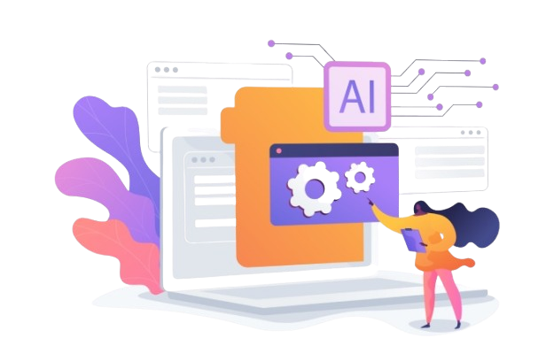
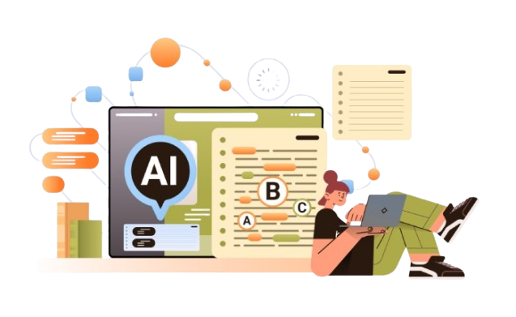

Writing Assistant: The Ultimate Guide To
Smarter And Faster Content Creation
Smarter And Faster Content Creation
What Is a Writing Assistant and How Does It Work?
In the digital age, content creation is no longer restricted to professional writers or native English speakers. A writing assistant is an intelligent writing tool designed to help users plan, compose, proofread, edit, and polish their English writing efficiently. Whether you need to paraphrase complex sentences, transform your writing for clarity, or perform comprehensive grammar checking, a writing assistant leverages advanced technologies—such as natural language processing (NLP) and machine learning—to deliver seamless text improvement.
Modern AI writing assistants, such as Grammarly, EnglishEditAI, and Stork, utilize contextually-aware AI that not only checks your work for spelling and grammar errors but also enhances readability and tone. The most advanced solutions, like ChatGPT or Write Brain, go a step further by offering suggestions based on your writing purpose, assisting with paraphrasing, generating professional English, and integrating seamlessly into platforms like Google Docs, Microsoft Word, Gmail, and Outlook.

Key Benefits of Using a Writing Assistant for Content Creation
Enhanced Writing Quality for All Users
AI writing assistants play an essential role in improving content quality, particularly for non-native English speakers. Tools likeAI Writer help writers refine their work through grammar correction, spelling checks, proofreading, and sentence improvements. These features ensure professional, polished English across blog posts, technical reports, manuscripts, and product descriptions.
Improved Productivity and Efficiency
Leveraging writing automation through a writing assistant enables content creators to work smarter and faster. With integrated essay checkers, sentence rewriters, and summarizer tools (such as Readefine and Eskritor), writers can generate, polish, and summarize text within minutes. This boost in workflow productivity allows you to focus more on ideation and less on mechanical editing tasks.
Consistency, Accuracy, and Tone
Consistency is key in professional English, and writing assistants maintain uniformity across website copy, marketing content, and business emails. They adapt suggestions based on the document type, ensuring a coherent style. AI content creators and text generators, like WriteMe.ai and re:write, further help to maintain voice and tone across diverse content types.
Comprehensive Support and Integrations
From CV generators and resume builders to APA citationgenerators and plagiarism checkers, modern AI writing assistants provide all-in-one solutions. Integration with platforms like Chrome Web Store, LinkedIn, and Gmail ensures that no matter where you write, real-time assistance is always available. For enterprises like Clariant or academic contexts such as Harvard University, Stanford University, and Caltech, such tools facilitate publishing-ready documentation.
Essential Features to Look for in a Writing Assistant
Advanced Grammar Checker and Proofreading Tool
The best writing assistants offer more than basic spell check—they provide deep grammar correction, a robust punctuation checker, and real-time proofreading, identifying errors missed by traditional editing tools. Tools like Grammarly and Grammar Labs are well-regarded for their comprehensive grammar check functionality.
AI-Powered Paraphrase and Rewrite Tool
A reliable AI writing assistant should include a sophisticated paraphrasing engine, paired with a rewrite tool and sentence rewriter. Such features allow users to reword content, adapt tone, and avoid redundancy. Paraphrasing not only benefits non-native English speakers but also aids native speakers in improving originality and clarity.
Built-in Plagiarism Checker and Citation Generators
To ensure academic or professional integrity, a comprehensive plagiarism checker is crucial. Additionally, instant APA citation generator, MLA citation generator, and Harvard reference generator capabilities streamline referencing—particularly valuable for essays, manuscripts, and technical reports.
Seamless Integration and Contextual Awareness
Look for writing assistants that integrate with popular platforms (e.g., Google, Microsoft, Chrome Web Store, LinkedIn) and offer contextually-aware AI. This ensures your editing tool understands the format—be it blog articles, emails, or scholarly reports—and provides appropriate suggestions.
Practical Ways to Use a Writing Assistant in Your Workflow

Streamline Drafting and Editing Processes
A writing assistant is invaluable for turning rough drafts into polished writing. Easily perform comprehensive proofreading and error correction with tools like Grammar Labs or ChatGPT, saving time and reducing cognitive load.
Improve Professional and Academic Submissions
For students at Harvard University or employees at companies in San Jose, CA or Issaquah, WA, using an essay checker or summarizer ensures submissions are free from grammatical mistakes and plagiarism. Integration with APA citation generator, MLA citation generator, and Harvard reference generator streamlines bibliography management.
Enhance Daily Business Communications
AI writing assistants integrated with email clients (such as Gmail or Outlook), like Storkapp.me or Briskine, support writing professional emails by suggesting email templates and assisting with proofreading and grammar checking—ensuring correspondence represents your organization in the best light.